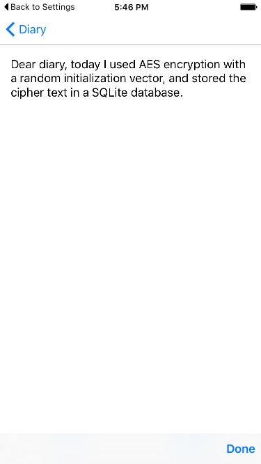

Duration
20 minutes
Goals
The primary goal of this exercise is to use symmetric encryption to protect locally-stored user data.
This exercise adds encryption to the Diary app. The core work of creating, saving, and loading diary entries in a SQLite database has already been completed. Your job is to encrypt the diary entries before they are stored, and decrypt them when they are retrieved. A screenshot of the diary editor page with a decrypted entry is shown below.
Note that the code in this part adds a new value to the stored user accounts which means that existing accounts will no longer work correctly after these changes. Please reset your emulator/simulator or use new accounts for testing.
Assets
This exercise is a continuation of the prior exercise. You may use your existing solution or open the Completed solution in the Exercise 2 folder. The provided Exercise 3 folder contains a subfolder named Completed with a solution you can use to check your work.
Challenge
- Generate and save symmetric key material in the
Propertiesdictionary when creating a newAccount. - Complete the
Encryptmethod in Security/CryptoUtilities.cs using 256bit AesCbcPkcs7 and a random initialization vector. - Complete the
Decryptmethod in Security/CryptoUtilities.cs. - Update the
GetCipherTextmethod in EditorPage.xaml.cs to use the newEncryptmethod. - Update the
GetDiaryTextmethod in EditorPage.xaml.cs to use the newDecryptmethod. - Test your changes by running the application and creating a new diary entry, closing and re-opening the app to reload the entry you just created.
Steps
Examine the CryptoUtilities class
In this first part, we will explore the provided implementation and point out a few places where you will be adding code.
- Open the Security/CryptoUtilities.cs file in the PCL project. This class will hold our encryption code.
- Look at the
GetAES256KeyMaterialmethod; this creates cryptographically random data that our app will use as key material for our symmetric keys. - Locate
ByteArrayToStringandStringToByteArray; these methods will convert existing strings to byte arrays and return the byte arrays to strings. We'll use these methods to convert user-entered strings to arrays and vice-versa. The user-entered data arrives as strings but the encrypt/decrypt operations work on byte arrays so we need to do this conversion.
Create and Save Key Material
Each user will need a unique key to perform encryption (we do not want to share a single key across multiple users because one user could then decrypt another user's diary entries). You will generate the user's key when they first create their account and store it in their Account object.
The Account's Properties dictionary is only able to store strings so we'll Base64 encode the key material before storing it. Recall from the prior exercise that Base-64 Encoding is a common way to convert binary data into a string for transmission or storage.
-
Open AccountManager.cs in the PCL project and find the
CreateAndSaveAccountmethod. -
Create key material using the
CryptoUtilities.GetAES256KeyMaterialmethod. -
Base64 encode the key material using the static
Convert.ToBase64Stringmethod. -
Save the key material in the account's
Propertiesdictionary using kmKey as the key.
Implement the Encrypt method
- Open Security/CryptoUtilties.cs in the PCL and find the Encrypt method. Notice the method takes two byte-array parameters and returns an encrypted byte array.
-
The first step is to create a provider for the correct algorithm from PCLCrypto. We'll be using AesCbcPkcs7. Use the static
WinRTCrypto.SymmetricKeyAlgorithmProvider.OpenAlgorithmmethod passing inSymmetricAlogrithm.AesCbcPkcs7. -
Once the provider is created, we can call its CreateSymmetricKey method, passing in the keyMaterial. This will return an
ICryptographicKeyobject representing our key. Save it to a local variable named key. -
Next we'll generate a 16-byte random initialization vector using the static
WinRTCrypto.CryptographicBuffer.GenerateRandommethod and save it to local variable named IV. Use the providedconstintIVSize instead of hardcoding the 16-byte length. -
Now we can encrypt our plainText value. Call
WinRTCrypto.CryptographicEngine.Encryptpassing in key, plainText, and IV and save the encrypted result to a local variable named cipher. - We're almost done, but we need to include the initialization vector with the cipher so it is available during decryption. Notice how we use a unique IV for each encryption operation; therefore, we need that same IV available for each decryption. We will store the IV by prepending it to the cipher text. Create a new byte array named cipherText that is long enough to store both IV and the cipher value.
-
Use the
byte[] CopyTomethod to copy the two individual arrays into the cipherText array: IV first since it's a fixed-length and cipher second. - Return the cipherText value which includes the IV and encrypted text.
Implement the Decrypt method
-
Locate the
Decryptmethod in the Security/CryptoUtilties.cs file. Notice the method takes two byte-array parameters and returns an unencrypted byte array. -
Just like we did for the
Encryptmethod; create a key for the symmetric AesCbcPkcs7 algorithm. See the encryption steps above for details. The code that calls this method will ensure that the same key material is passed to you so you will use the same key for decryption that you used for encryption. -
Next, extract the initialization vector from the cipher text. Create a new byte array named IV with a size of IVSize and use the static
Array.Copymethod to copy the initialization vector from cipher to IV. Remember, we stored it in the first IVSize (16) bytes. - Create another byte array named cipher with a length that is IVSize (16) less than the length of cipherText.
-
Use the
Array.Copymethod to copy the rest of the data from cipherText to cipher. -
We have everything we need to decrypt; use the
WinRTCrypto.CryptographicEngine.Decryptmethod to decrypt cipher using key and IV. - Return the decrypted byte array.
Encrypt Diary Entries
Next, you will add code to encrypt diary entries before they are stored. The user interface and the button click-handlers have already been implemented for you. The first few steps walk you through the existing code. The remaining steps guide you through your task.
- Open Pages/EditorPage.xaml.cs in the PCL. All your work for this part will be done in this file.
-
Locate the constructor. Notice we're passing in the
Accountobject and saving it locally in account. This means the user's encryption key is available to you since it is stored in their Account. -
Locate the
BtnSaveClickedevent handler. This method uses theGetCipherTextmethod to encrypt the user's diary entry. -
Locate the stub implementation of the
GetCipherTextmethod at the bottom of the source file. Your job is to complete the implementation of this method. -
Retrieve the key material from account's Properties dictionary using kmKey as the key and save it to a local string variable named keyString. If the retrieval fails, return
nullfrom GetCipherText. -
The key material is Base64 encoded. Use
Convert.FromBase64Stringto decode it to a byte array. -
Use the static
CryptoUtilties.StringToByteArraymethod to convert the passed in diaryText to a byte array. -
Encrypt using the static
CryptoUtilities.Encryptmethod. - Return the encrypted result.
Decrypt the Diary Entries
As a last step, you will add code to decrypt an existing diary entry when the user loads it for editing. The first few steps below walk you through the supplied starter code. The remaining steps guide you through your task.
- Continue working in EditorPage.xaml.cs file.
-
Locate the page's constructor. Note how it uses the GetDiaryText method to decrypt the diary entry stored in the
DiaryEntrymodel object. - Locate the stub for the GetDiaryText method. Your job is to complete the implementation of this method. The following steps will guide you.
-
Retrieve the key material from account's Properties dictionary using kmKey as the key and save it to a local variable named keyString. If it fails return
String.Empty. -
The key material is a Base64-encoded string. Use
Convert.FromBase64Stringto decode it to a byte array. -
Decrypt the passed in cipherText using the static
CryptoUtilities.Decryptmethod with the key material. -
CryptoUtilities.Decrypt returns a
byte[]. UseCryptoUtilities.ByteArrayToStringto convert the decrypted byte array to astringand return the decrypted string. - As before, we've added new information into our account which isn't present for existing accounts. Either create a new account to work with, or delete and re-install the application which will delete all your existing accounts.
- Run the application, create a new account (so you have the IV), create a diary entry, and save it. Edit the entry you just created and verify the text was decrypted correctly.
Summary
In this exercise, we generated key material to be used with AES 256 encryption and stored the key material using Xamarin.Auth. We used the key material to encrypt and decrypt user-entered diary entries.